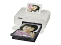

器材库 > 照片打印机 > SELPHY CP1300

基本规格
发布日期
2017-08-31
打印机类型
便携照片打印机
打印技术
染料热升华
最高分辨率
300×300dpi
打印速度
明信片尺寸约47秒，L尺寸约39秒，卡片尺寸约27秒
打印头/墨盒
墨盒/墨水
专用彩色墨盒（Y，M，C，覆膜）
打印性能
打印介质
专用打印纸：明信片尺寸，L尺寸，卡片尺寸，卡片尺寸方形贴纸，卡片尺寸8幅贴纸
纸张尺寸
明信片（无边框）：100×148mm, L尺寸（无边框）：89×119mm, 卡片尺寸（无边框）：54×86mm, 卡片尺寸8幅贴纸（每张）：22×17.3mm, 卡片尺寸方形贴纸：50×50mm
供纸方式
纸匣自动进纸
接口/卡槽
USB接口/网络接口
高速USB接口：连接到PictBridge兼容设备：USB兼容Type A接口连接到电脑：USB兼容Mini-B接口无线LAN规格：IEEE802.11b/g
其它规格
液晶显示屏
3.2
工作温度
5-40℃
工作湿度
20-80%
电源
通过CA-CP200 B小型电源适配器提供24V DC,1.8A或使用NB-CP2LH电池（需另购）或使用NB-CP2L电池（需另购）
功耗
交流电60W待机4W
尺寸
180.6×135.9×63.3mm
重量
860g
该产品暂无存档的网友点评
产品图 / 样片
SELPHY CP1300